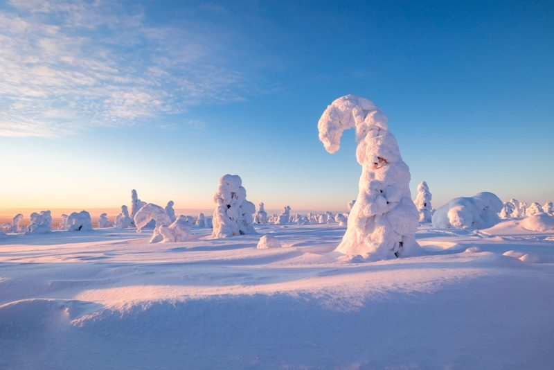
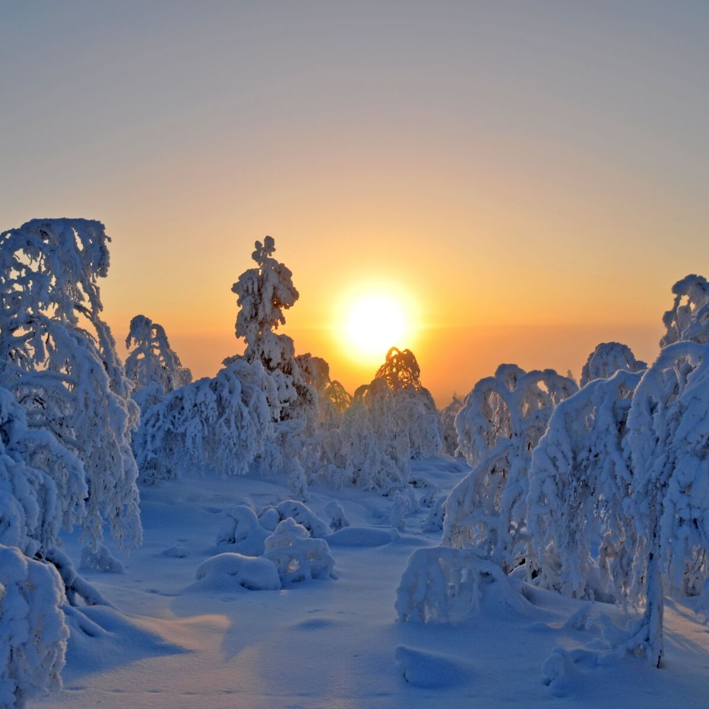
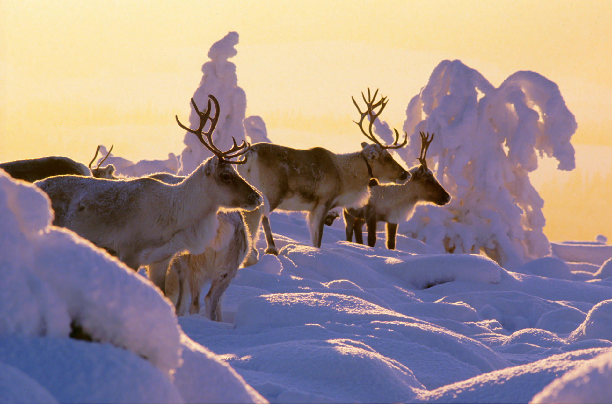
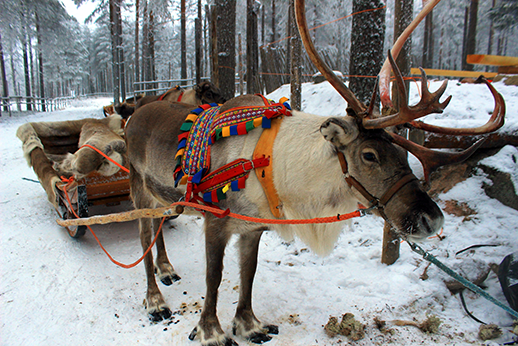
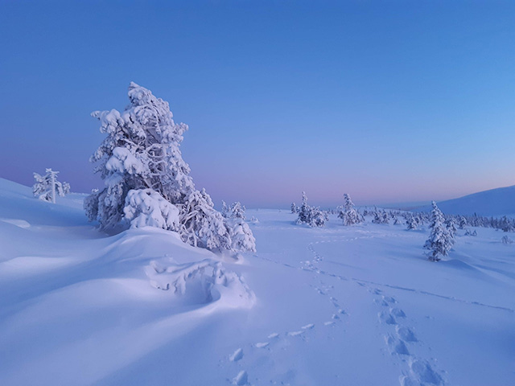

Julemagi i Lappland



Julemagi
Hvis du har lyst til å få en ekstremt bra juleopplevelse så vil jeg anbefale deg å dra til Lappland i Finland. Alle trærene i Lappland er dekket med snø sånn at grenene blir dyttet ned fordi de har så mye snø på seg. Hvis du er heldig så kan det hende at du får møtt reinsdyr i Lappland som løper rundt om kring.

Vintervansker
Selvom det er koselig, julesteming og at det ser bra ut så kan det være ganske irriterende med så mye snø hele tiden fordi det er galtt, slitsomt å gå og at det er iskaldt, men folka som bor her er vandt til alle disse problemene så de har ikke det ikke så veldig vanskelig på vinteren.
